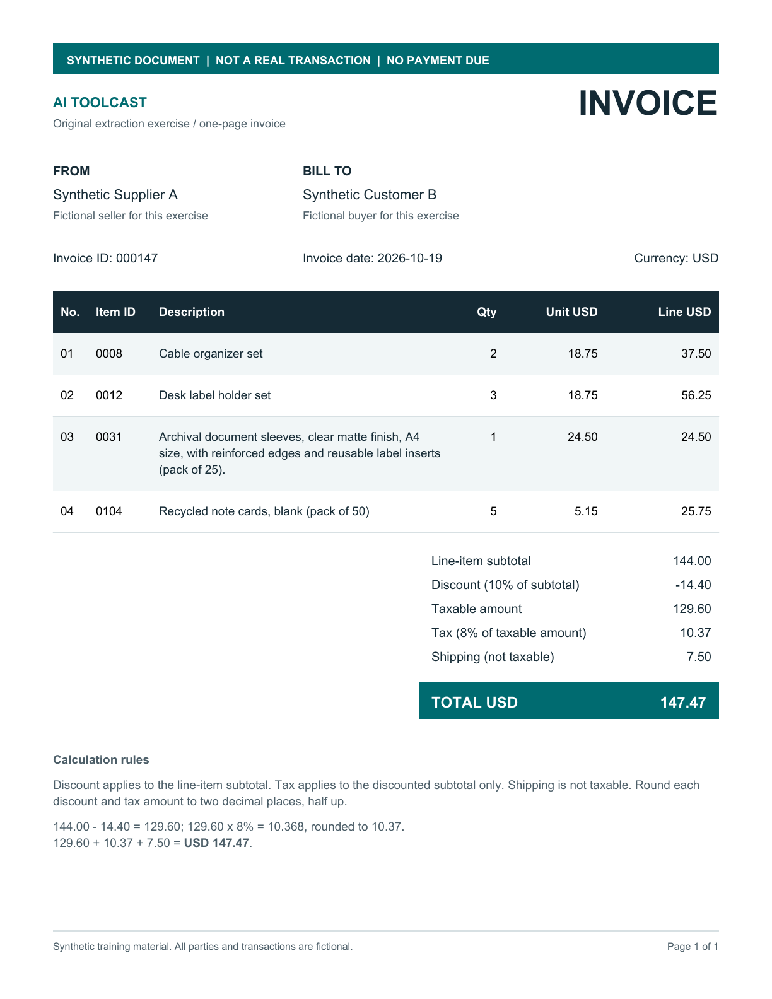

AI Extraction Checkup
Try one invoice extraction. See exactly which values, formats and rows need a closer look.
A free exercise by AI Toolcast. One synthetic invoice, a fixed answer and explicit rules. This is not a model benchmark or a checker for your own invoices.
1. Get the practice invoice

Use this fictional, four-row invoice as the source in an AI tool that accepts PDFs or images.
No document upload happens here. Any AI service you choose has its own data policy.
2. Ask your AI to extract it
Attach the practice invoice in your chosen AI tool and use this instruction. It defines leading zeroes, dates, decimals and the discount sign before you begin.
Read the full instruction
Extract the supplied synthetic practice invoice into one JSON object. Return only JSON: no Markdown fences, commentary or extra fields. Use these invoice-level fields: invoice_id, invoice_date, currency, seller, buyer, line_items, subtotal, discount_rate, discount_amount, taxable_amount, tax_rate, tax_amount, shipping and total. line_items must be an array. Each printed row needs these fields: line_id, item_id, description, quantity, unit_price and line_total. Preserve the printed line ID for each row; do not number rows again based on their order. Use each JSON key only once per object. Use JSON strings for all known scalar values, including IDs and numbers. Preserve leading zeroes and meaningful characters in identifiers. Use YYYY-MM-DD for the invoice date and the document's currency code. Use two decimal places for money. Express percentage rates as decimal fractions, such as "0.05" for 5%, without a percent sign. Quantities are decimal strings without units. Join wrapped description lines with spaces while preserving their words. Keep each quantity, unit price and line total associated with its printed row. For this exercise, discount_amount is the positive magnitude to subtract from subtotal, even when the invoice displays the adjustment with a minus sign. The relationship is subtotal minus discount_amount plus tax_amount plus shipping equals total. Follow the document's stated tax/shipping rules. Do not fill unreadable printed values by calculation or guesswork. If a scalar value cannot be read, include that required field with null. Do not explain it outside the JSON. A null flags uncertainty to the checker and does not count as a successfully extracted value. Keep line_items as an array; use null for an unreadable row field rather than inventing its contents. Use only the practice source PDF/image as evidence. Do not consult its gold answer or example response files. This is one educational exercise, not a representative model benchmark.
3. Check your response
Comparison runs on your device.
Paste one JSON object, without code fences. Up to 65,536 characters.
Your response is not saved here. Reset clears the exercise.
Try a synthetic example
These are deliberately prepared controls, not observed AI outputs. Example checks are excluded from reader-use counts.
Your report
Plain-text report
What the check means
The checked answer contains 37 scalar fields across this invoice and its four rows. A match means those fields meet this exercise’s rules; it does not predict performance on another document.
Comparison rules
- Rows align by their unique printed
line_id, regardless of order. Missing and duplicate IDs are reported without guessing. - IDs and currency preserve case, punctuation and leading zeroes. Descriptions allow whitespace differences, while preserving the words and case.
- Known values must be strings. Money uses two decimal places, dates use YYYY-MM-DD and rates use decimal fractions. Decimals are compared exactly.
discount_amountis the positive amount to subtract. The PDF’s printed minus sign is a representation convention, not evidence of a general AI error.- Missing, blank and
nullvalues do not pass. Format and uncertainty findings remain separate from wrong-value findings. Unexpected fields are also reported.
See the full comparison contract and response schema.
Inspect the checked answer
Finish your own extraction before opening the answer if you want a blind exercise. AI Toolcast created and checked this synthetic fixture.
A small, open exercise
Built by AI Toolcast. For your own datasets or broader evaluation work, explore Omni Extract Bench or EvalLens. Their comparison policies and scope differ.
Privacy and usage measurement
Pasted JSON is compared in this browser. This page does not send it to AI Toolcast or an AI provider, and does not save a response history. Copying a report puts its contents on your device’s clipboard; downloading creates a text file.
The hosted tool may send limited usage events such as a comparison being completed or a report download being started. These events never include pasted JSON, report text or field values. Built-in examples and ?qa=1 checks are excluded from reader-use counts. See AI Toolcast’s privacy notice for hosting and site analytics.
Source, support and changelog
The original source and synthetic fixture are available under the MIT license on GitHub. See source notes and local run instructions. Support is limited to reproducible issues with this fixed exercise; there is no promise of general invoice support or ongoing feature development.
Release 0.1.0, comparison rules 1.0.0: one synthetic invoice, explicit comparison rules, pasted JSON and a plain-text report.